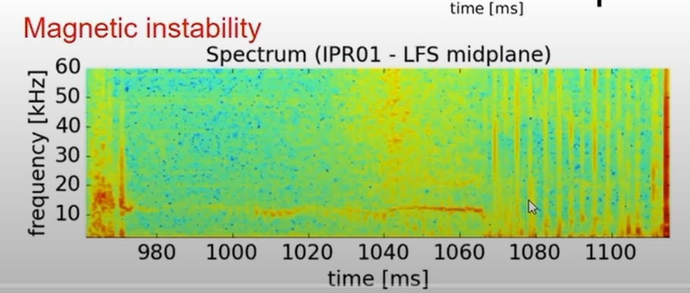
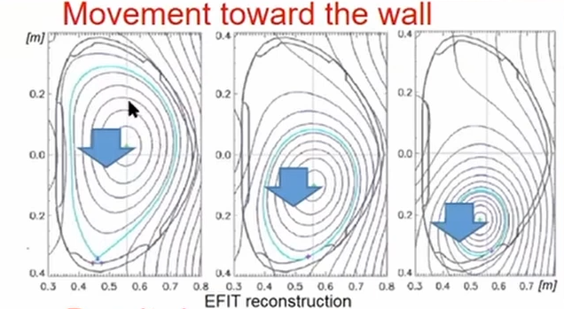
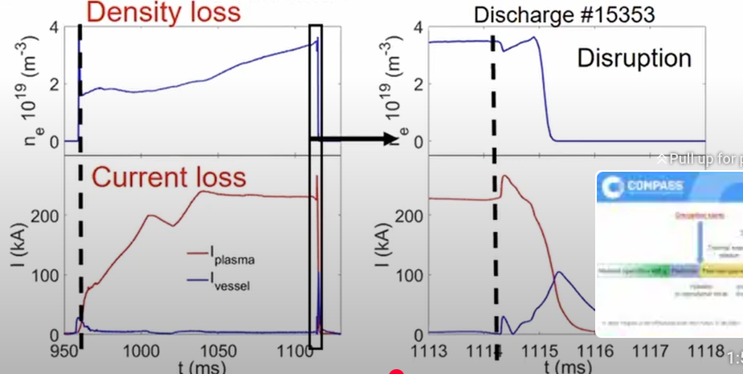
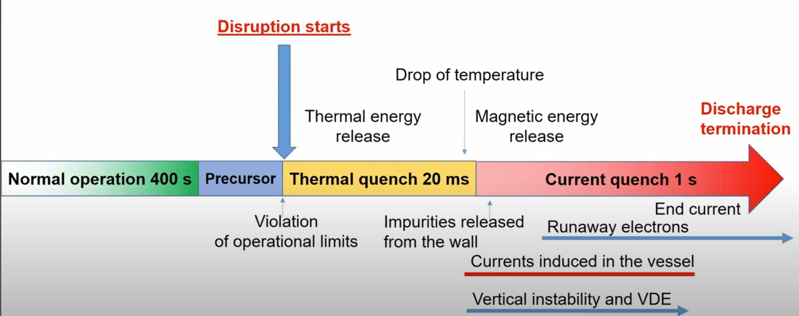

Basic concepts#
Fusion reactions require temperatures of 50-150 millions degree celsius temperature. No material can withstand direct contact with plasma at these temperatures without melting or vaporizing. Even the most heat-resistant materials, like tungsten, would fail almost instantly. Magnetic confinement allows containing the plasma without direct contact with a solid body. This is possible because plasma is an ionized gas, and therefore it is affected by magnetic fields.
Disruption#
Videos of disruption.
Disruption is uncontrolled loss of plasma confinement. It is a very dangerous event, as it can cause damage to the reactor.
Typical Disruption#
Disruptions can the following things:
Magnetic instability
Loss of plasma current
Loss of plasma density/ pressure
Loss of plasma shape or movement of plasma to the wall.
Magnetic activity#
The following plot is taken from COMPASS Tokamak, operational in 1990s in the UKAEA. The plot is called a magnetic instability spectrum. On the x-axis time is measured in milliseconds (ms), showing how the plasma behavior evolves. One the y-axis, frequency of magnetic fluctuations is shown in kilohertz (kHz), representing oscillations in the magnetic field. The Red/yellow colour denotes strong magnetic activity or instabilities. See this plot as a scatter plot with a colormap not as a standard 2D plot.

Sudden Increase in Magnetic Activity
Around 1070 ms, there is a sudden increase in the magnetic activity across multiple frequencies. This suggests the growth of unstable modes in the plasma.
After 1070 ms, the spectrum becomes chaotic, signals the breakdown of magnetic confinement
Loss of Coherence: The magnetic field can no longer maintain the plasma’s shape and position
Movement towards the wall#

This EFIT reconstruction, a reconstruction of the plasma’s magnetic equilibrium, shows signs of a plasma disruption, specifically the movement of the plasma column toward the wall. The black lines are magnetic flux surfaces, which describe the shape and position of the plasma within the reactor. Ideally, these surfaces are well-contained and concentric, staying centered in the reactor.
The blue arrows indicate the movement of the plasma as it becomes unstable and shifts toward the wall of the reactor. The evolution shows the plasma shifting and distorting, losing its confinement.
Density and plasma current loss#

The small rectangle (Lest 2 plots) is magnifying the region of disruption in the right two plots.
Plot-1 (Top left)
Y-axis: Electron density, which measures how many electrons are present in the plasma per unit volume.
X-axis: Time in milliseconds (ms)
Plot-2 (Bottom left)
Y-axis: Plasma current, which measures the flow of charged particles in the plasma.
X-axis: Time in milliseconds (ms)
Before the disruption, the electron density and plasma current is relatively stable or increasing.
After the disruption, the electron density and plasma current drop significantly, indicating a loss of particles and current in the plasma. This is because of the fact that plasma is moving out of the confinement region.
Timeline of disruption#

In the green zone, the plasma is stable and well-confined. The plasma is in a good state, with no disruptions or instabilities.
In the blue zone, certain parameters (e.g., plasma current, density, or pressure) exceed their safe operating range, causing instabilities to form.
In the Yellow Zone, the plasma rapidly loses its thermal energy, releasing it into the reactor’s walls and divertors.
In the red zone, the plasma current, which generates the confining magnetic field, drops sharply. It can cause severe mechanical and thermal stresses on the reactor.